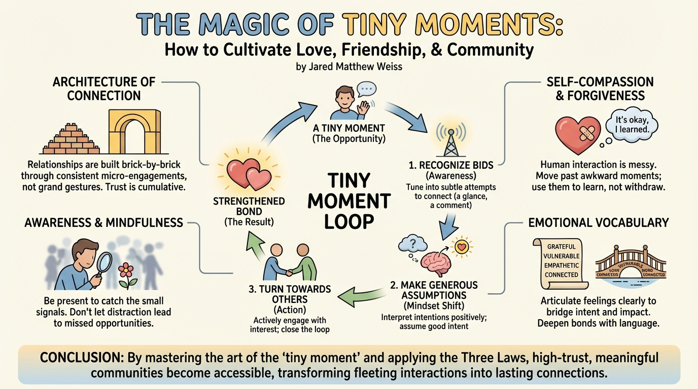

ASIN: B0DPJJ9GYV
Audible
AI Generated Content
Generated by gemini-3-pro-preview

The Magic of Tiny Moments: How to Cultivate Love, Friendship, & Community
Introduction
In an era often defined by a “loneliness epidemic,” many individuals operate under the assumption that deep, meaningful connections require grand gestures or dramatic, life-altering events. Jared Matthew Weiss’s The Magic of Tiny Moments: How to Cultivate Love, Friendship, & Community challenges this prevailing narrative. Weiss argues that the true fabric of our relationships—and the quality of our lives—is woven not from massive leaps of faith, but from how we handle the “tiny moments” that present themselves every day. Drawing from behavioral science, neuroscience, and his own qualitative research involving over 10,000 participants across 26 countries, Weiss presents a practical framework for transforming fleeting interactions into lasting bonds [2].
Overview of the Key Points
The core of Weiss’s philosophy is a concept he terms the “Tiny Moment Loop,” which he identifies as the fundamental architecture underlying every human interaction. He posits that the struggle to connect is rarely due to a lack of opportunity, but rather a failure to perceive and utilize the micro-interactions that are constantly available.
To navigate this loop effectively, Weiss introduces “The Three Laws of Connection,” a structured approach to interpersonal dynamics:
- Recognizing Bids: The first law focuses on awareness. Readers are encouraged to tune into the subtle, often missed attempts others make to connect. These “bids” can be as simple as a comment on the weather or a shared glance, serving as invitations for engagement.
- Making Generous Assumptions: The second law involves a shift in mindset. Weiss advocates for interpreting the behaviors and intentions of others in the most positive light possible. By assuming good intent, we create an environment of safety and trust that is essential for vulnerability.
- Turning Towards Others: The final law is about action. It requires actively engaging with these bids rather than ignoring them or turning away. By responding with interest and attention, we “close the loop” of connection, validating the other person and strengthening the bond.
Overview of the Key Themes
The Architecture of Connection A central theme of the book is that relationships are built brick-by-brick through small, safe interactions. Weiss emphasizes that trust is not established overnight but is the result of consistent, positive micro-engagements.
Awareness and Mindfulness The book stresses the importance of becoming “conscious” of one’s social environment. Many opportunities for connection are lost simply because we are too distracted or preoccupied to notice them. Mindfulness in this context means being present enough to catch the small signals others send our way.
Self-Compassion and Forgiveness Weiss acknowledges that human interaction is messy. A significant theme in the book is the necessity of forgiveness—both for others and for oneself. He argues that connecting deeply requires the resolve to move past awkward moments or failed interactions, using them as learning experiences rather than reasons to withdraw.
Emotional Vocabulary The author also explores the importance of language. Developing a robust emotional vocabulary is presented as a crucial tool for deepening bonds. Being able to articulate feelings clearly helps bridge the gap between intent and impact in relationships with family, friends, and colleagues.
Conclusion
The Magic of Tiny Moments concludes with an empowering message: high-trust, meaningful communities are accessible to anyone who can master the art of the “tiny moment.” By shifting focus from the overwhelming “big picture” of social life to the microscopic interactions of the everyday, readers can gain agency over their social well-being. Weiss suggests that by simply showing up for the small moments and applying the laws of connection, we can repair fractured bonds, alleviate loneliness, and cultivate a richer, more connected life [2].
Further Reading
For those interested in exploring the science of connection and relationships further, the following titles offer complementary insights:
- The Relationship Cure by John Gottman: A foundational text on the concept of “bids for connection,” offering a deep dive into the research that likely influenced Weiss’s framework.
- The Power of Moments by Chip Heath & Dan Heath: This book explores how specific, elevated moments shape our lives, memories, and relationships, providing a broader context for the importance of moments.
- Platonic: How the Science of Attachment Can Help You Make—and Keep—Friends by Marisa G. Franco: An examination of the science behind making friends in adulthood, with a focus on attachment theory.
- Connect: Building Exceptional Relationships with Family, Friends, and Colleagues by David Bradford & Carole Robin: Based on a popular Stanford Business School course, this book provides a rigorous framework for building high-trust relationships.
Sources
- [1] Goodreads Author Page: https://www.goodreads.com/author/list/55201500.Jared_Matthew_Weiss
- [2] Amazon/Audible Book Page: https://www.amazon.com/Magic-Tiny-Moments-Cultivate-Friendship/dp/B0DPJJ9GYV
- [3] Thought.is Author Profile: https://thought.is/author/jared-matthew-weiss/